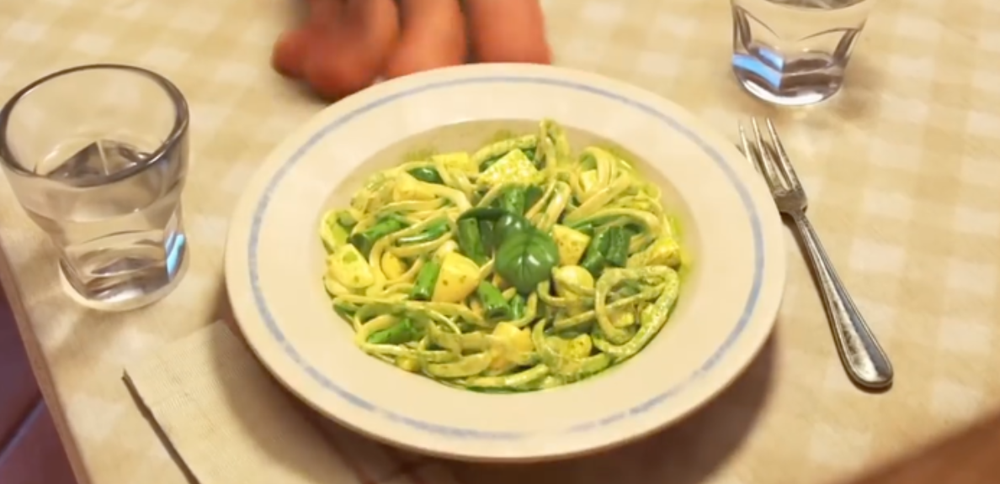

Trenette al Pesto

Green Pasta
Ingredients
- 1 Tbsp kosher salt
- 300 g yellow-skin potatoes, peeled
- 150 g green beans, washed, trimmed
- 450 g dried fettuccine pasta or dried trenette pasta
- Pesto
- Extra virgin olive oil
- 3-4 basil leaves
Steps
-
Bring a large pot of water to boil.
Add the kosher salt to season the water.
-
Meanwhile, cut the potatoes into 1-inch cubes.
-
Cut the green beans into 1-inch pieces.
-
Once the water is boiling, add potatoes and cook for 4 minutes.
Add the dried fettuccine pasta and cook for an additional 10-11 minutes
or until the pasta is al dente.
In the last 3-4 minutes of cooking, add the green beans.
Towards the end of cooking, reserve about 1 cup of the pasta cooking liquid.
**If using dried trenette pasta, add the potatoes and cook for 10 minutes,
then add the green beans and allow them to cook for an additional 2 minutes.
Then, add the pasta and cook for just 2 more minutes.
-
Drain the pasta/potatoes/beans once cooked.
-
Add the pesto to a large bowl.
Add the drained pasta/potatoes/beans and about ¼ of the reserved pasta water.
Toss to combine the pasta.
-
Finish the pasta with olive oil and garnish with more basil leaves.